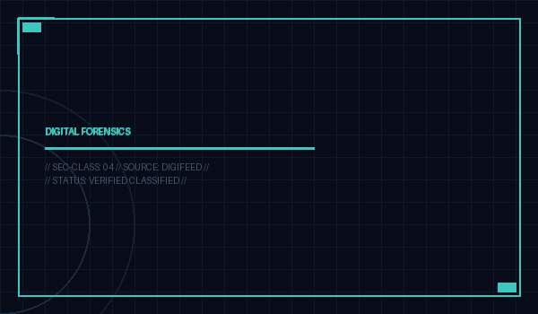

DFIR ArticlesInfoSec News Nuggets – 10/08/2026
FBI: Ongoing FortiBleed attacks lock out FortiGate VPN admins The FBI is warning that the FortiBleed campaign against internet-exposed Fortinet FortiGate firewalls and SSL VPN gateways is still active, months after a massive credential leak was first discovered in June.